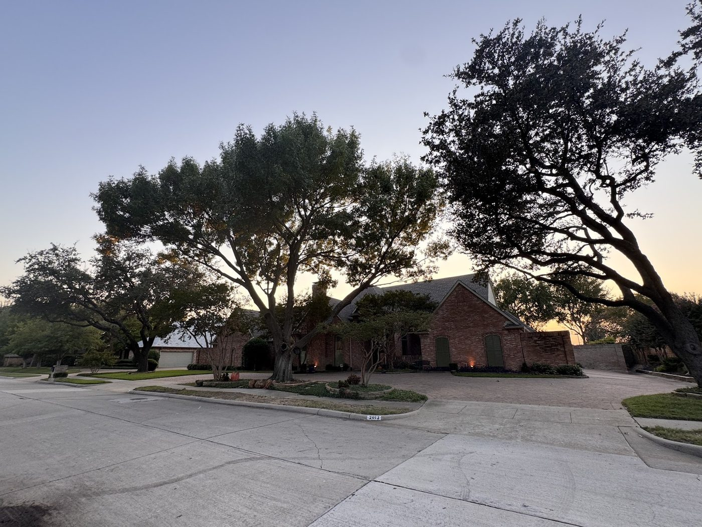
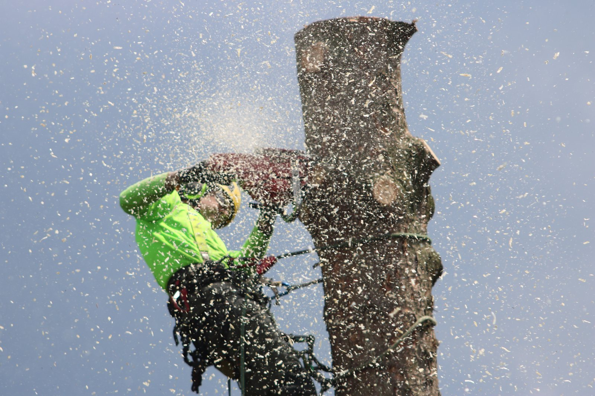
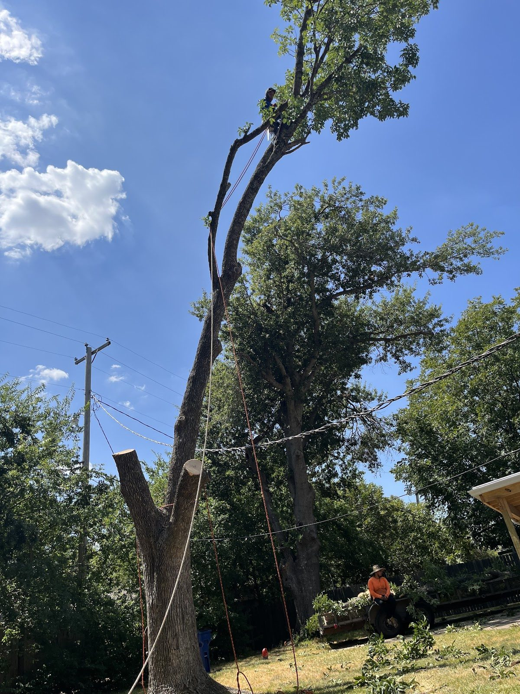
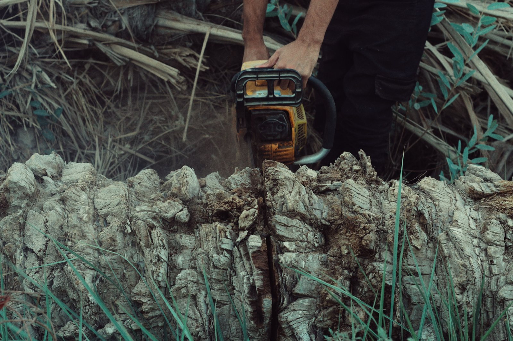
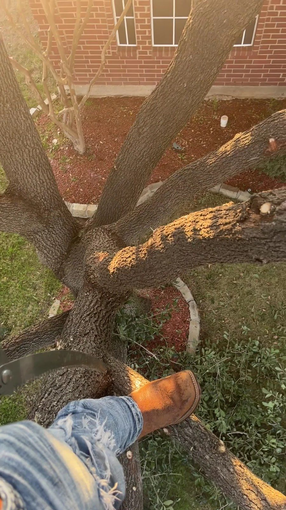

1
Tree trimming and pruning
Deadwood out, crossing branches opened up, and the canopy thinned enough to let light back through. Also the shrubs around the house.

Plano, Texas — and the whole Metroplex
Trimming and pruning, removal, stump grinding, and grass put in where the stumps used to be. Call or text with a photo from the driveway and we will tell you what the tree actually needs.
The cross-section
Cut a trunk and you can read its whole life. The same works for a job: the outer ring is what comes off the tree, the inner rings are what happens once it is gone.

1
Deadwood out, crossing branches opened up, and the canopy thinned enough to let light back through. Also the shrubs around the house.

2
Big trees come down in sections, not in one piece. The order they are taken matters as much as the cutting.

3
The stump goes below grade and the chips go wherever you want them. Nothing left to trip over in the grass.

4
New grass where a stump used to be, or a bare patch by the driveway that never grew back properly on its own.
Up in the tree
Nothing this size goes over in one drop. The crown is reduced first, then the limbs are taken in sections, and only the trunk last. Each piece is either roped down or walked out, and the order is chosen so the tree never falls where it is not wanted to.
It is slower than a felling cut and it is the difference between a clean removal and a mess somebody else has to clean up. The frame below is the middle of that: a climber in the crown, ropes already through the wood, and a second crew on the ground.
Frame 01Crown reduced, ropes through the trunk, crew on the ground
Frame 02Looking up into the fork from inside the canopy
Live oaks
Oak and trimming are the two words that come up most in the reviews, and it is not a surprise. A live oak is not a decoration on a Plano street, it is the thing the street is built around, and the trimming has to respect that while still getting the limbs off what they are leaning over.
That balance is the whole job. Too little and the limb stays. Too much and the tree has lost more canopy than it can put back in a season.
5.0
stars on Google
Every Google review: five stars.
Best One Tree Service
Plano, Texas
And the words underneath them
Clean-up, punctuality, communication and a driveway left usable. That is what a tree job is actually judged on.
Read the reviews on GoogleQuestions
Live oaks hold their leaves through the winter here, so the main window is after the leaves drop and before they come back. That is also when the tree can tell you what it needs, because deadwood, crossing branches and limbs grown into each other all stand out without a canopy. Chipping the debris rather than piling it under the tree is part of why oak work runs on that schedule.
A grind takes the stump down below grade and the chips go onto the lawn, the bed or the driveway. How deep it can go depends on what is underneath, which is why a photo of the stump and whatever is around it is worth more than a description of it.
Ask what the clean-up covers before you agree anything. On most work limbs come down, brush gets chipped or hauled away, and the driveway is walked before the truck leaves. Clean-up is the word that comes up most often in the reviews, so it is the right thing to ask about.
One photo of the tree from the driveway, one of the trunk and the ground around it, and a note on how high the work is and whether anything overhangs a driveway, a fence, a roof or a neighbour's line. For stump work, a photo of the stump and what surrounds it.
Contact
Phone is the quickest way in. Text suits a photo taken from the driveway. Email suits anything with a map link or a list of addresses attached.